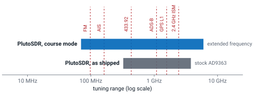
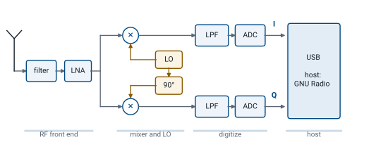
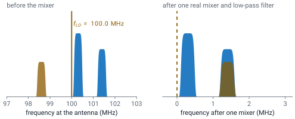
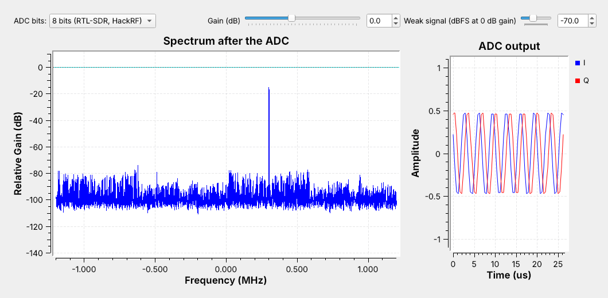
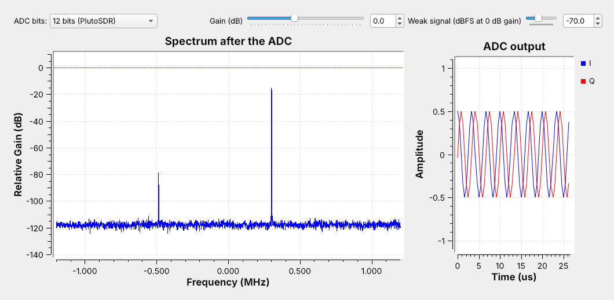
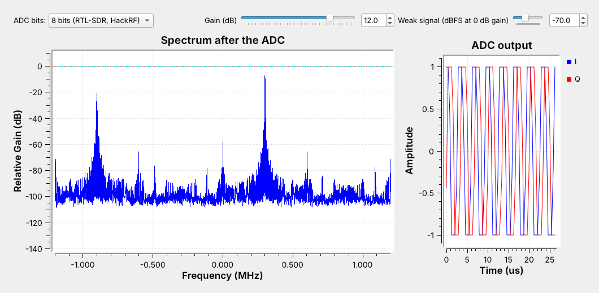

L4 - SDR Introduction#
SDR Introduction
One USB radio receives broadcast FM, aircraft, and key fobs, because software decides what to do with its samples.
Lesson 4 · Module 2: SDR & GNU Radio Foundations · Dr. Neil Rogers
Slides
Learning Objectives
- I can describe what a Software Defined Radio is, contrast it with a traditional hardware radio, and identify the SDR used in this course, the PlutoSDR.
- I can identify the roles of the RF frontend, ADC/DAC, and host in an SDR signal chain and describe sample-rate, bandwidth, and dynamic-range trade-offs.
One Radio, Many Signals

One PlutoSDR covers every dashed signal; only the software changes.
An SDR digitizes early and does the rest in software.
A new job means a new flowgraph, not new hardware.
The PlutoSDR in your kit plugs into a USB port and receives broadcast FM at 100 MHz, ship AIS at 162 MHz, key fobs at 433.92 MHz, aircraft ADS-B at 1090 MHz, and Wi-Fi at 2.4 GHz, all with the same hardware, and it transmits too. As shipped, a Pluto tunes 325 MHz to 3.8 GHz, which misses broadcast FM and AIS. The course Plutos are set to extended-frequency mode, which tunes 70 MHz to 6 GHz, so the PlutoSDR covers every marked signal. Planning a capture starts with checking that the signal falls inside that range.
A traditional analog radio, such as a classic FM receiver, builds each step as a circuit: its filters pass one channel width, its demodulator handles one modulation, and a different signal means a different radio. A software defined radio (SDR) is a radio in which some or all of the physical layer, the filtering, mixing, demodulation, and decoding, happens in software. It still needs an antenna, a filter, an amplifier, and a converter, but everything after the converter is a program, so the same box becomes an FM receiver, an ADS-B decoder, or a spectrum analyzer depending on which flowgraph runs. In this course that program is a GNU Radio flowgraph, which Lesson 5 introduces.
The Course SDR: the PlutoSDR
Specification |
PlutoSDR |
|---|---|
Tunes |
70–6000 MHz (325–3800 as shipped) |
Streams over USB |
about 4 MS/s |
Bursts |
up to 61.44 MS/s |
Bits |
12 |
Transmit |
full duplex |
The PlutoSDR (Analog Devices ADALM-PLUTO) is the course radio: every cadet is issued one, and every lesson and lab uses it. It has 12-bit converters and one transmitter and one receiver, which can run at the same time (full duplex). Out of the box it tunes 325 MHz to 3.8 GHz; the course Plutos are set to extended-frequency mode, which treats the chip as an AD9364 and tunes 70 MHz to 6 GHz with up to 56 MHz of bandwidth.
Its converters sample at up to 61.44 MS/s, but its USB 2.0 link streams only about 4 MS/s without dropped samples, so we keep live flowgraphs at 2 to 4 MS/s and capture anything wider in short bursts. An RTL-SDR, if you own one, also works as a receive-only 8-bit radio from 0.5 MHz to 1.766 GHz; no lesson needs it. The Sources frame below links the manufacturer’s numbers.
Sources for the Specifications
Every number in the table above comes from Analog Devices’ data:
Analog Devices, ADALM-PLUTO: 325 MHz to 3.8 GHz as shipped, up to 20 MHz instantaneous bandwidth, 12-bit ADC and DAC, up to 61.44 MSPS, one transmitter and one receiver, half or full duplex.
Analog Devices wiki, Customizing the Pluto configuration: setting the PlutoSDR to run as an AD9364, 70 MHz to 6 GHz with up to 56 MHz of bandwidth, the extended-frequency mode the course Plutos use.
Analog Devices wiki, ADALM-PLUTO specifications: USB 2.0 streams up to 4 MSPS with no dropped samples.
Part 1: Inside an SDR

Front end: filter and amplify the band.
Mixer and LO: move it down to 0 Hz.
ADCs: turn \(I\) and \(Q\) into numbers for the host.
Follow the figure from left to right. The RF front end comes first: a filter passes the band and a low-noise amplifier (LNA) raises it, first in line because, from Lesson 2, the first amplifier sets most of the noise figure. The front end also holds the gain that the PlutoSDR Source block’s gain setting controls. Other SDRs reach the same \(I/Q\) stream by other routes, so a flowgraph sees the same kind of samples from any radio.
The mixer and local oscillator (LO) shift the band down so the converter can sample it, the low-pass filters keep only the shifted band, and the two analog-to-digital converters (ADCs) turn it into a stream of numbers. A transmitter runs the same chain in reverse, with digital-to-analog converters (DACs) and a mixer that shifts the signal up. The samples travel over USB to the host, the laptop running GNU Radio.
The Mixer Moves the Band

A mixer multiplies the signal by the LO.
A signal at \(f_{LO} + \Delta\) comes out at \(\Delta\).
One real mixer also puts \(f_{LO} - \Delta\) at \(\Delta\).
A mixer multiplies the incoming signal by the LO, a sine wave at \(f_{LO}\). The product of two cosines is a cosine at their difference frequency plus one at their sum:
with \(a = 2\pi f_{RF} t\) for the signal and \(b = 2\pi f_{LO} t\) for the LO. The low-pass filter after the mixer removes the sum. A station at 100.3 MHz mixed with an LO at 100.0 MHz comes out at 0.3 MHz, and the filter removes the 200.3 MHz sum. When we set an SDR’s center frequency in GNU Radio, we are setting \(f_{LO}\), and the band around it lands near 0 Hz.
The figure also shows the limit of one real mixer. A cosine cannot tell a positive frequency from a negative one, so the station at 98.6 MHz, 1.4 MHz below the LO, comes out at 1.4 MHz, on top of the 101.4 MHz station.
I and Q: Two Mixers a Quarter Cycle Apart
One mixer folds \(f_{LO} + \Delta\) and \(f_{LO} - \Delta\) onto the same \(\Delta\).
A second mixer, with the LO shifted 90°, tells them apart.
Each sample is \(I + jQ\).
Look again at the second branch of the chain figure. The signal goes to two mixers, one driven by the LO and one by the LO shifted 90°, a quarter cycle. The first output is the in-phase component \(I\) and the second is the quadrature component \(Q\).
Together they form one complex sample, \(I + jQ\), the point in the plane of Lesson 3. A signal above the LO makes that point rotate one way and a signal below makes it rotate the other way, so the 98.6 MHz station of the last figure comes out at \(-1.4\) MHz, clear of the one at \(+1.4\) MHz. Lesson 5 shows what this looks like on GNU Radio’s plots, including the negative frequencies it makes possible.
Superheterodyne
A superheterodyne receiver mixes twice: first to a fixed intermediate frequency (IF), then to 0 Hz. The widget follows a classic FM radio, which mixes every station to 10.7 MHz. The wanted station is at 100.3 MHz and the first LO at 111.0 MHz, so 111.0 − 100.3 = 10.7 MHz. A station at 111.0 + 10.7 = 121.7 MHz also comes out at 10.7 MHz; that is the image. Press Step and watch the spectrum after each block: the preselector knocks the image down, the LNA raises the signals and the noise floor together (the first amplifier sets the noise figure, from Lesson 2), the mixer moves everything by 111.0 MHz and adds sum products, the IF filter keeps one channel, and the second mixer brings it to 0 Hz for the ADC. Then check Preselector off: the 121.7 MHz station lands on 10.7 MHz on top of the wanted one, and no filter after the mixer can separate them. Transmit runs the chain backward: the band-pass removes the mixer’s unwanted product at 121.7 MHz and the LO leakage before the PA raises the output. This is a broadcast station’s chain; a course transmitter sends its test signal at 915 MHz.
Three Receiver Architectures
![Three receiver chains, one above the other. Superheterodyne: antenna, preselector, LNA, a mixer with LO1, IF filter, IF amp, an I/Q mixer with LO2, LPF, ADC, GNU Radio; trade-off, two mixers and more parts, and the filter ahead of the first mixer must reject the image. Zero-IF, the PlutoSDR: antenna, filter, LNA, an I/Q mixer with the LO, LPF, ADC, GNU Radio; trade-off, few parts, a DC spike at 0 Hz and I/Q imbalance. Direct RF sampling: antenna, anti-alias filter, LNA, a very fast ADC, GNU Radio; trade-off, no analog mixer, a very fast ADC, and a filter that keeps out everything above half the sample rate](../../viz/img/L04-architectures.svg)
Superheterodyne: two mixers; image rejection and more parts.
Zero-IF (the PlutoSDR): one I/Q mixer; a DC spike and I/Q imbalance.
Direct sampling: no mixer; a very fast ADC and strong anti-alias filtering.
The three rows move the ADC closer to the antenna. The superheterodyne does most of its filtering and gain at one fixed IF, which works well for every station it tunes, but it needs two mixers, two LOs, and a preselector that removes the image before the first mixer.
The chain in the Inside an SDR figure goes from RF to 0 Hz in one step, which makes it a direct-conversion, or zero-IF, receiver; the PlutoSDR is one. Zero-IF needs few parts, but anything that leaks into the mixer output at 0 Hz lands in the middle of the band, one source of the DC spike that Lesson 5 shows, and two mixer paths that are not perfectly matched leave a faint mirror image of each signal, called I/Q imbalance.
A direct-sampling receiver has no analog mixer at all. A filter and an amplifier feed an ADC fast enough to digitize the RF band itself, and the mixing happens in software. That takes a very fast ADC and a filter that keeps out everything above half the sample rate, which would otherwise alias into the band (Lesson 5). Whatever the architecture, GNU Radio receives complex samples, so the flowgraph does not depend on how the radio produced them.
Part 2: Sample Rate and Bandwidth
Complex samples at \(f_s\) show a band \(f_s\) wide, centered on \(f_{LO}\).
GNU Radio carries each sample in 8 bytes: \(8 f_s\) bytes per second.
20 MS/s is 160 MB/s into the flowgraph.
The sample rate \(f_s\) sets how much spectrum we see at once. With complex samples, the window is \(f_s\) wide, from \(f_{LO} - f_s/2\) to \(f_{LO} + f_s/2\). Lesson 5 shows why and what happens to signals outside it. A PlutoSDR at 2.4 MS/s sees 2.4 MHz of the FM band, twelve 200 kHz channels. Seeing the whole 20 MHz band at once takes 20 MS/s, which the PlutoSDR delivers only in a short burst. Near the edges of the window the radio’s own filters begin to roll off, so the usable bandwidth is somewhat less than \(f_s\), and the stations at the very ends of the band sit in that roll-off.
A higher rate also means more data. Inside GNU Radio each complex sample is two 32-bit floats, 8 bytes, so a flowgraph handles
which is 19.2 MB/s at 2.4 MS/s and 160 MB/s at 20 MS/s. Every block processes every sample, and a laptop or a USB link that cannot keep up drops samples, which shows up as gaps in the plots and clicks in the audio. The right sample rate is a little more than the bandwidth of the signal we want, not the radio’s maximum.
SDR Window
The plot is a simulated band, and the shaded region is the part of it the chosen radio sees at its center frequency and sample rate. Start on the FM band with the PlutoSDR at 2.4 MS/s: three stations fit in the window. Raise the sample rate past 4 MS/s, the most the PlutoSDR’s USB link streams without dropped samples, and the readout marks the rate as burst only. On the 2.4 GHz ISM band, 4 MS/s shows only a slice of one 20 MHz Wi-Fi channel. Raise the rate to about 20 MS/s, find the center frequency that puts one whole Wi-Fi channel in view, and watch the data rate into GNU Radio grow to 160 MB/s, which the PlutoSDR delivers only as a short burst.
Part 3: Bits and Clipping
An \(N\)-bit ADC has \(2^N\) levels between \(-\)full scale and \(+\)full scale.
More bits put the converter’s own noise floor lower.
Above full scale, the ADC clips.
An ADC rounds each voltage to the nearest of \(2^N\) levels between its negative and positive full scale: 4096 for the 12-bit PlutoSDR, 256 for an 8-bit radio. The rounding error acts like a small noise added to every sample, and finer steps mean less of it, so a radio with more bits has a lower floor. The span from the strongest signal the converter can take to that floor is its dynamic range, and it decides how weak a signal can be and still show up next to a strong one.
We measure signal levels against full scale in dBFS: 0 dBFS is full scale, and a signal at \(-6\) dBFS has half the full-scale amplitude. The ADC cannot represent a signal above 0 dBFS, so it clips it. The flowgraph below shows both limits on GNU Radio’s plots.
The Quantizer Flowgraph

A strong tone at \(-6\) dBFS and a weak one 64 dB below it.
Gain, then an ADC block with 8, 12, or 16 bits.
The flowgraph L04-adc-bits.grc builds the receiver’s problem from two tones. A strong tone at 300.7 kHz with amplitude 0.5, which is \(-6\) dBFS, stands in for a nearby station, and a weak tone at \(-487.3\) kHz, at \(-70\) dBFS by default, stands in for a distant one. A Noise Source adds a very small noise floor. A Multiply Const applies the receiver’s gain from a slider, in dB.
The ADC block is an Embedded Python Block, about 15 lines of code saved inside the .grc file. It clips \(I\) and \(Q\) to full scale, \(\pm 1\), and rounds each to one of \(2^N\) levels, with \(N\) chosen from the bits menu: 12 for the PlutoSDR, and 8 and 16 for comparison. The frequency sink shows the spectrum after the ADC, and the time sink shows 64 output samples. The sink’s 0 dB line is not full scale, so we read differences between levels on its plot, not absolute values.
8 Bits

The 8-bit floor and spurs reach within about 60 dB of the strong tone.
The weak tone, 64 dB down, lies below the spurs.
With 8 bits and 0 dB gain, the strong tone stands near \(-15\) dB on the sink’s scale, and the ADC’s rounding error fills the rest of the band with a ragged floor between about \(-100\) and \(-75\) dB. Because the input is a pure tone, much of that error repeats with the tone and shows up as discrete spurs rather than smooth noise. The highest of them come within about 60 dB of the strong tone.
The weak tone at \(-0.49\) MHz is 64 dB below the strong one, below the spurs, and it is not visible, although nothing about the weak signal has changed. The time sink shows why the strong tone is safe: its peaks reach about 0.5, half of full scale.
12 Bits

The floor drops about 20 dB, and the spurs are gone.
The weak tone appears about 40 dB above the floor.
Switching the menu to 12 bits, the PlutoSDR’s resolution, changes nothing about the input. The floor drops to about \(-118\) dB and becomes smooth, and the weak tone appears at \(-0.49\) MHz near \(-79\) dB, about 40 dB above the floor. The extra bits did not make the weak signal stronger; they lowered the floor beneath it.
Lowering the weak-signal slider until the tone disappears shows how far below the strong tone a weak signal can sit on this radio. Switching to 16 bits lowers the floor again, but by less, because the Noise Source’s noise now sits above the converter’s own error and sets the floor. That is the situation a well-adjusted receiver aims for: the antenna’s noise, amplified by the front end, should sit above the converter’s own floor.
Too Much Gain

12 dB of gain drives the strong tone 6 dB past full scale.
Clipping creates false signals; the largest is near \(-0.9\) MHz.
Raising the gain is the usual way to lift a weak signal out of the converter’s floor, and it works only until the strongest signal reaches full scale. At 12 dB of gain the strong tone’s amplitude would be 2, 6 dB above full scale. The time sink shows \(I\) and \(Q\) flattened at \(\pm 1\), and the strong tone rises only about 7 dB on the spectrum instead of 12.
The clipping distorts the waveform, and the distortion appears as new signals. The largest, near \(-0.9\) MHz, is about 12 dB below the strong tone, and smaller spurs spread across the band. On a real SDR these false signals look exactly like transmissions, which is how an overloaded receiver shows stations at frequencies where nothing transmits. The gain setting is a balance: high enough to lift weak signals above the converter’s floor, and low enough to keep the strongest signal below full scale.
Choosing the Radio and Its Settings
Range: the signal sits inside 70 MHz to 6 GHz.
Sample rate: a little more than the signal’s bandwidth; past 4 MS/s, a burst.
Gain: the strongest signal in the window stays below full scale.
Every capture in this course starts with the same three choices on the PlutoSDR. For broadcast FM, a station about 200 kHz wide near 100 MHz, 2.4 MS/s is enough, and Lesson 5 does exactly that. A 20 MHz Wi-Fi channel at 2.4 GHz is within the tuning range but wider than the 4 MS/s the Pluto streams, so it takes a short burst capture at 20 MS/s or more. A signal the course generates never goes out on a real service’s frequency: a flowgraph that transmits a test signal sends it at 915 MHz into a cable through the 30 dB attenuator, or, if your instructor says so, over the air at 915 MHz at low power. The PlutoSDR can receive it at the same time.
The gain comes last, set against the strongest signal in the window, not the one we want. A weak signal next to a strong one is where the PlutoSDR’s 12 bits matter, and where an 8-bit radio needs a narrower window or a filter ahead of it to keep the strong signal out. Lesson 5 gives the procedure for setting the gain on a live PlutoSDR.
Demo: Explore a Band on the PlutoSDR
Run
L05-fm-spectrum.grcon the PlutoSDR at 98 MHz.Read the spectrum and the waterfall.
Drag the center frequency across the band.
Raise the gain until false stations appear; back off.
Before building a receiver for a signal, we find it with a flowgraph that only looks. This is an instructor demo with the Lesson 5 flowgraph, which cadets run themselves once GNU Radio is installed. A PlutoSDR Source at 2.4 MS/s feeds a spectrum and a waterfall, with sliders for the center frequency and the gain.
The top plot is the spectrum, 2.4 MHz wide around the center frequency, and the waterfall below it scrolls the same spectrum through time, so a station that stays on the air draws a steady vertical stripe. Each FM station is a stripe about 200 kHz wide. Drag the center frequency slider and the stripes slide across the display. Now raise the gain slider in steps and watch the noise floor and the strongest stations. At first the weak stations rise above the floor; past some setting, new stripes appear where nothing transmits, the clipping of the Too Much Gain frame on a real radio. Back the gain off until they disappear. Lesson 7 adds the demodulator that plays a station, and the same look-first steps find a signal before every lab.
Other SDR Software
GNU Radio is the course’s tool, and every lab step is a GNU Radio flowgraph. Standalone receivers are optional extras for a quick look on your own time; no lab depends on them.
Program |
What it is for |
|---|---|
SDR Flex |
Dr. Rogers’s explore tool: spectrum, waterfall, demodulators, and decoders; runs in a browser |
GQRX |
a spectrum, waterfall, and AM/FM/SSB receiver built on GNU Radio |
SDR++ |
a cross-platform spectrum, waterfall, and receiver |
SDR# (SDRSharp) |
a Windows spectrum, waterfall, and receiver |
SDRangel |
a receiver and transmitter with many built-in demodulators |
SigDigger |
a signal analyzer for measuring unknown signals |
Key Point
An SDR mixes a band to 0 Hz and digitizes \(I\) and \(Q\). The sample rate sets the visible spectrum; the ADC’s bits and the gain set how weak a signal can be near a strong one.
Downloads and Sources
L04-adc-bits.grc: a strong and a weak tone through a simulated ADC, with menus and sliders for the bits, the gain, and the weak signal’s level. No hardware needed.
Open it from GRC’s File menu, or run gnuradio-companion L04-adc-bits.grc from the radioconda prompt. The ADC block is an Embedded Python Block; GRC saves its code inside the .grc file, so it needs no other download. Install radioconda first; Lesson 5 walks through the install and hands out L05-fm-spectrum.grc, the PlutoSDR flowgraph of the demo.
This lesson follows Dr. Rogers’s 2025 slides and these pages:
Summary
Idea |
What it is |
Number to remember |
|---|---|---|
SDR |
filtering, mixing, demodulation, and decoding in software |
one radio, many signals |
PlutoSDR |
the course radio: full duplex, 12 bits |
70–6000 MHz (extended mode), 4 MS/s streaming |
Mixer |
\(f_{LO} + \Delta\) comes out at \(\Delta\) |
center frequency = \(f_{LO}\) |
\(I\) and \(Q\) |
two mixers 90° apart |
tell \(+\Delta\) from \(-\Delta\) |
Architectures |
superhet, zero-IF, direct sampling |
the PlutoSDR is zero-IF; FM IF 10.7 MHz |
Sample rate |
window \(f_s\) wide |
\(8 f_s\) bytes per second in GNU Radio |
ADC bits |
more bits, lower floor |
8 bits: 256 levels; 12 bits: 4096 |
Clipping |
strongest signal above 0 dBFS |
false signals across the band |
Practice
Looking Ahead
Lesson 5 installs GNU Radio and builds the first flowgraphs.
It shows complex sampling, aliasing, and gain on a live PlutoSDR.
Today we followed a signal from the antenna through the front end, the mixer and LO, and the ADCs to the host, and we saw how the sample rate and the ADC’s bits limit what a capture can show. Checking the PlutoSDR’s tuning range, sample rate, and gain against the signal is the first step of every lab.
Lesson 5 picks up where the ADC leaves off. It installs radioconda, builds a flowgraph from a signal source and then from a real PlutoSDR, and shows complex sampling, aliasing, the DC spike, and the gain setting on GNU Radio’s plots. Before Lesson 5, download L04-adc-bits.grc so it is ready to open once you install GNU Radio.